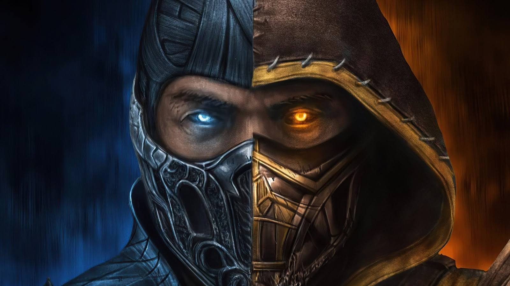

Em Mortal Kombat, Shang Tsung, imperador da Exoterra, envia seu melhor guerreiro, Sub-Zero, para assassinar o jovem Cole Young. Temendo pela segurança da família, Cole vai em busca de Sonya Blade seguindo a indicação de Jax, um major das Forças Especiais, que tem a mesma estranha marca de dragão com a qual Cole nasceu. Logo, ele se vê no templo do Lorde Raiden, um Deus Ancião e guardião do Plano Terreno, que abriga todos que possuem a marca. No templo, ele treina com os experientes guerreiros Liu Kang, Kung Lao e Kano, enquanto se prepara para lutar contra os inimigos da Exoterra em uma batalha pelo universo. Será que Cole irá longe o suficiente para desbloquear sua arcana - o imenso poder da sua alma - a tempo de salvar não apenas a família, mas interromper os planos de Shang Tsung de uma vez por todas?
